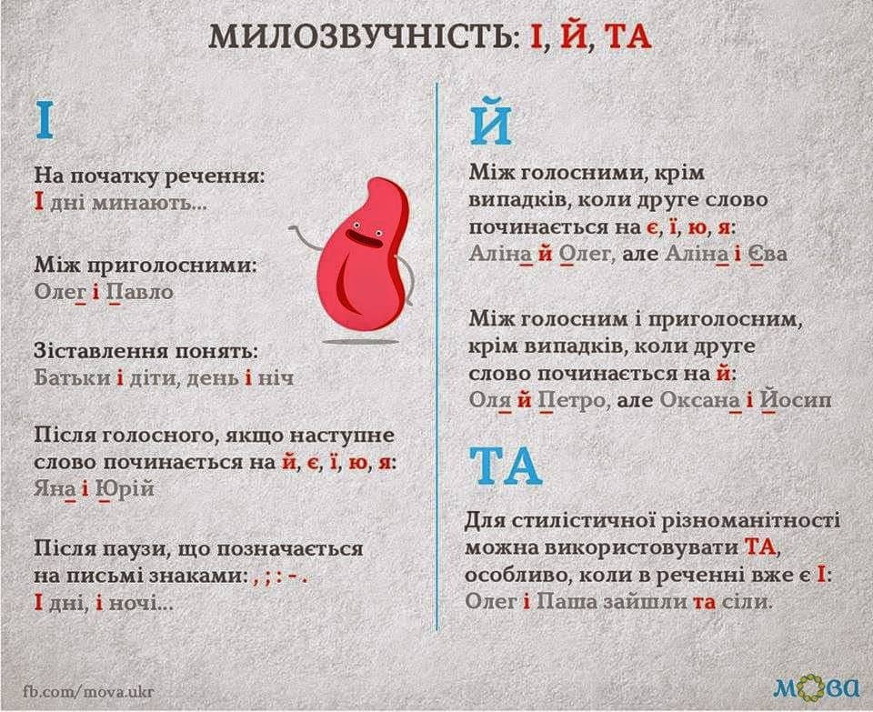
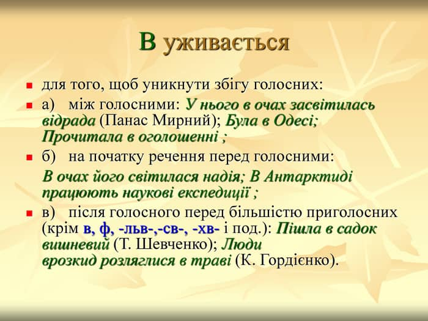

Засоби милозвучності української мови
Опубліковано: 31-01-2021
Українській мові притаманна милозвучність (евфонічність), яка виявляється в плавності, мелодійності, інтонаційній виразності мовлення. Евфонічність є однією з природних властивостей української мови. Вона досягається такою організацією звуків у межах слів, речень і всього тексту, за якої вони легко і розбірливо вимовляютьс
В українській мові в усіх позиціях слова домінує вживання приголосного звука у сполученні з голосним, а не з іншим приголосним чи голосного з голосним. Такі особливості мовлення були здавна властиві українським говорам. Складний для вимови збіг кількох різних приголосних трапляється рідко – переважно в запозичених слов
Милозвучність сучасної української літературної мови твориться такими засобами:
1. спрощенням груп приголосних звуків (-ждн- → -жн- (тиждень - тижня); -здн- → -зн- (проїздити - проїзний); -стн- → -сн- (область - обласний); -слн- → -сн- (ремесло - ремісник); -стл- → -сл- (щастя - щасливий); -скн- → -сн- (тріск - тріснути); -зкн- → -зн- (брязкіт - брязнути);
2. змінами приголосних [г], [к], [х], [ж], [ч], [ш], [з], [ц], [с] перед суфіксами -ськ-, -ств- у процесі словотворення й словозміни (убогий – убозтво, парубок – парубоцький, птах – птаство, латиш – латиський, товариш – товариський – товариство, молодець – молодецький – молодецтво, Полісся - поліський);
3. змінами приголосних [г], [ж], [з] і [с] перед суфіксом -ш- (дорогий –дорожчий, дужий – дужчий, низький –нижчий, високий – вищий);
4. чергуванням голосних, наприклад, [о], [е] з [і]; [о], [е] з [ø]; [е] з [и] в дієслівних коренях тощо (стіл – стола, вечір – вечора, липень – липня, свічки – свічок, вітер – вітри,гонити – ганяти, допомогти - допомагати);
5. чергуванням приголосних звуків у процесі словозміни й словотворення: [г], [к], [х] із [ж], [ч], [ш]; [г], [к,] [х] із [з], [ц], [с;] [д] - [дж], [т] - [ч], [з] - [ж], [с] - [ш], [зд] - [ждж], [б] - [бл], [в] - [вл], [п] - [пл], [м] - [мл], [ф] - [фл] (нога – ніжка – нозі; рука – руці – ручний; горіх – у горісі – горішок; ходити – ходжу; платити – плачу; мазати – мажу; носити – ношу; їздити – їжджу; любити – люблю; мовити – мовлю; ліпити – ліплю; тямити – тямлю; графити - графлю);
6. появою вставних приголосних між голосними (павук, геро[йі]ка) та голосних між приголосними (вікно – вікон, весна - весен)
Як засіб милозвучності в українській мові використовуються слова:
1. з початковим голосним і без нього (ржа – іржа, мла - імла)
2. з кінцевим приголосним і без нього (знову - знов);
3. з приставним приголосним і без нього (вогонь – огонь, вуста - уста);
4. з префіксами з-, із-, зі-, зо-; від-, од-, віді-, оді- (знов – ізнов, зотліти – зітліти, відклеїти – одклеїти, відійти - одійти).
Більшість названих фонетичних варіантів стилістично нейтральні й можуть вживатися в усіх стилях. Проте деякі з них (огонь, одійти, одклеїти тощо) мають відтінок художнього або розмовного стилів і в офіційно-діловому мовленні є неприпустимими.
Важливим засобом створення милозвучності є чергування голосних [у], [і] з приголосними [в], [й].

Важливим засобом створення милозвучності є чергування голосних [у], [і] з приголосними [в], [й].
1. 'У' вживається:
- у позиції між двома приголосними: рух униз, необхідність у написанні;
- у позиції між двома приголосними: рух униз, необхідність у написанні;
- перед словами, що починаються на в, ф, льв, св, тв, хв тощо незалежно від закінчення попереднього слова: ситуація у взаємодії, розширення у формі кредитів;
- після паузи (розділового знака на письмі) перед наступним приголосним: Він очікував на неї вдома, у кімнаті.
2. 'В' уживається:
- у позиції між двома голосними: зміни в усій системі відносин;
- після голосного перед приголосним: кредитування в банках
- на початку речення перед наступним голосним: В університеті навчаються сотні студентів;
- на початку речення перед наступним голосним: В університеті навчаються сотні студентів;
- перед наступним голосним незалежно від закінчення попереднього слова: Вона вчилась в училищі.

3. Чергування у-в не відбувається:
- у власних назвах: Україна, Угорщина, Урал;
- у словах іншомовного походження: ультиматум, універсал, утилізація;
- у словах, що вживаються тільки з початковим у або тільки з початковим в: угода, установа, указ, влада, вступ, вклад. У деяких словах заміна початкового у або в спричиняє зміну значення слова: вдача (характер) – удача (успіх), вступ (початкова частина тексту) – уступ (виступ), вправа (завдання для тренування) – управа (спосіб покарання) тощо.
Чергування і–й відбувається в тих самих випадках, що й у–в.
- 'І' вживається:
1. у позиції між двома приголосними: розвиток і функціонування;
2. на початку речення перед наступним приголосним: І весь процес прискорився;
3. після паузи (розділового знака на письмі) перед наступним приголосним: Наша співпраця розвивається зараз, ів майбутньому проблема існуватиме.
2. 'Й' уживається:
- у позиції між двома голосними: зміни й інновації.
3. Чергування і – й не відбувається:
- під час зіставлення понять: війна і мир, день і ніч;
- у заголовках: Завдання і організація;
- перед словами, що починаються з й, я, ю, є, ї: своєчасне і якісне виконання обов’язків
Для усунення важких для вимови збігів голосних і приголосних в українській мові використовують також варіанти прийменника з – із – зі (зо):
1. з уживається перед словами, що починаються з голосного, незалежно від закінчення попереднього слова; перед початковим приголосним (крім с, ш) чи сполученням приголосних наступного слова, якщо попереднє слово закінчується голосним, а також на початку речення, після паузи: З часом теорія зазнала змін; укладати договір з автором; за домовленістю з продавцем.
2. із уживається переважно перед словами, що починаються на з, ц, с, ч, ш, щ, і між групами приголосних: кожна із пропозицій; звернутись із проханням;
3. якщо наступне слово починається сполученням приголосних, зокрема першими виступають з, с, ш, щ, то вживається зі: купувати зі знижкою; договори зі сторонніми організаціями. Прийменник зо як фонетичний варіант з і вживається зрідка, переважно в розмовному мовленні: зо мною, зо три літри тощо.
4. Фонетична незграбність виникає і через неправильне використання часток би (б), же (ж). Слід пам’ятати, що після приголосних уживаються частки би, же, а після голосних – б, ж: написав би–написала б; він же – вона ж.
Полегшує артикуляцію та створює милозвучність також правильне вживання форм дієслів на -ся (-сь): в позиції перед приголосним віддають перевагу постфіксу -ся, а в позиції перед голосним – постфіксу -сь. У дієприслівниках переважає форма -сь: прокинувшись, звернувшись.
Милозвучності можна також досягти певним добором і розташуванням слів. В усному й писемному діловому мовленні слід уникати не милозвучних збігів голосних і приголосних на межі слів (подала заяву директору заводу – подала заяву директорові заводу), римування слів у прозі, повтору однакових або близьких за вимовою звуків, звукосполучень, слів (використали нагоду укласти угоду, внесли великий внесок).
Отже, в усному діловому спілкуванні необхідно дотримуватися орфоепічних і акцентуаційних норм української мови та правил евфонічності. Фонетична незграбність негативно впливає на співрозмовника, що може позначитися на результатах спілкування.Питання та завдання для самоконтролю
1. У чому сутність поняття «милозвучність мовлення»?
2. Назвіть засоби милозвучності в українській мові.
3. Схарактеризуйте основні випадки вживання прийменників із метою створення милозвучності.